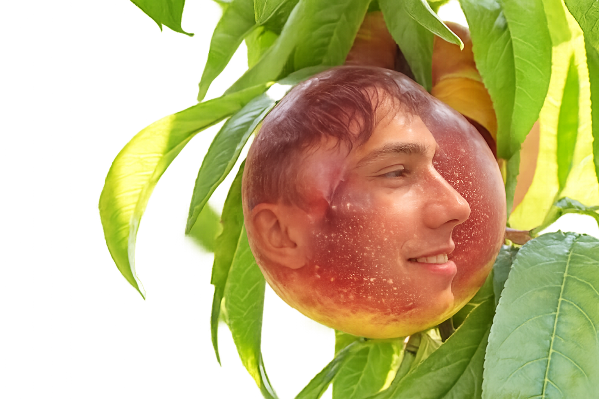

Nektarynki supremacy
Nektarynky jsou peak ovoce. Mají smooth skin, vypadají hard a chutnají lépe než většina random ovoce. Tento web je dedicated čistě nektarynkám, memečkům a absolutní nectarine energii.

Average nectarine enjoyer

Nektarynki power

POV: koupil jsi kilo nektarynek
